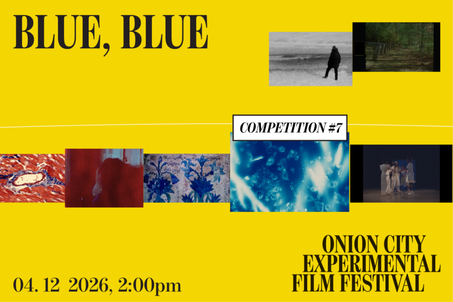

Onion City: Blue, Blue
The color blue. The color Maggie Nelson fell in love with for us to have the Bluets. In response, this program presents a set of moving bluets. Some films are literally blue, drenched in cyan; others explore grief, desire, the loss of innocence, the ache of sehnsucht. Blue is what we make of ourselves, and blue is what we remember.
Lineup:
Heaven and Earth | Kylie Walters | US | 2025 | 4 min | Chicago Festival Premiere
Midsummer | Masha Vlasova | Finland/US | 2024 | 3 min | Chicago Festival Premiere
Aftersong | Matthew Berka | UK | 2023 | 10 min | Chicago Festival Premiere
N/A (Not Available) | Robert Orlowski and Martha Orlowski | US | 2022 | 5 min |Chicago Festival Premiere
A Light Into A Void | Lin Chen | China/US | 2026 | 14 min | Chicago Festival Premiere
Nursery Rhymes. (Holy) Water | Belinda Kazeem-Kamiński | Austria | 2025 | 4 min | US Festival Premiere